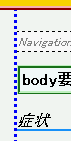
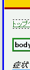

2003-04-06修正。WinIE5.0以前ではdotted/dashedに未対応であることを追加。
スタイルシートでの指定に関わらず、body要素に対して設定されたボーダーは常にsolid（実線）で表示される。また、その他の要素でもdashedまたはdottedスタイルのボーダーがsolidで表示される。
<style type="text/css">
body {
border-left: 3px dotted blue;
}
</style>
このページのbody要素に左ボーダーを点線で表示させています。
※このページは互換モードで表示させています。
Moz1.0での表示（互換モード）
WinIE6.0での表示（互換モード）
CSSでは、solid以外のボーダースタイルをsolidで表示してもよいとされているので、この現象は仕様に反する実装ではありません。